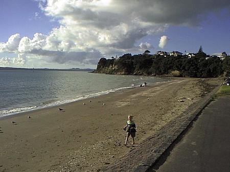
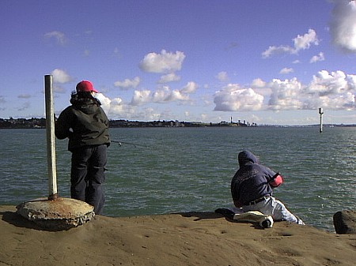
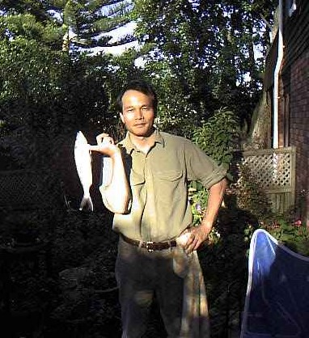

釣行日誌 ＮＺ編
カウワイ、そしてもう一つの衝撃
1999/06/19(SAT)
グレートサウスロードとグリーンレーンとの交差点にあるバス停に着くと、おじいさんが一人、バスを待っていた。
「釣りかい？」
「ええ、そうです。これからレディースベイまで行くんです。」
などと会話が始まり、聞くところによると彼、アンディはもうずいぶん長くオークランドに住んでいるらしい。バス停の前にはコミュニティセンターがあるのだが、そこは昔、ワントリーヒルの消防署だったそうだ。
「あの中には消防車があってな。消防車ったって馬車がポンプを引いてたんだぜ」
アンディはこれからグレンイネスの自宅へ帰るところだそうだ。ワントリーヒル方面からバスが来るのが見える。路線番号は００７、ダブル・オー・セブンである。００７のバスに、黄金銃ではなくカーボンロッドを持った男が乗り込む。あまり絵にならない。
この路線は、オークランドを東西に横断している路線であり、西のポイントシェバリエから東のセントヘリアーズまで、ぐねぐねと走っている。雨上がりで快晴の今朝は、空、雲、町並み、街路樹、芝生が見事に美しい。全面的に人生を肯定できる朝である。
資生堂の倉庫やオークランド大学のタマキキャンパスなどを眺めつつ走ったバスがぐぃっと坂を乗り越えると海が見える。セントヘリアーズベイである。

今日はひょっとして一番乗りか？と思ってドキドキしたが、件の浜には先客が一人。ニコニコと自己紹介をして話が始まる。たくましい体躯の彼、ウィリーは珍しいドラム型のリールをセットしている。キャストの時にはスプールがロッドと直角になり、リーリングの時には平行になるらしい。トコロカワレバ、シナカワル。
「こないだはここでデカイ鯛を釣ったぜ。ちょっと海が荒れてたけどな」
希望的観測は厳に謹んでいるのだが、なかなか魅力的な発言である。負けじと新調のダイワのキャスティングロッド：BW902MHS-S と、スピニングリール：REGAL-X 2500T とをセットする。しめて130NZ$（約8500円）は、留学生にとって清水の舞台からバンジージャンプ！的な買い物であった。元を取らねばなるまい。
いつものお立ち台からキャスティングを始めると、こないだよりも海がわずかに濁っているようだ。原因は不明だが、ジグのキャスティングにはいささか分が悪いな、と弱気になる。本日の満潮は午前11:49分。時刻は10時に近く、すでにだいぶ潮が満ちて来ている。ふっふっふ。ゴールデンタイムは近いぜ、と強気になる。
「ウィリー、鯛を狙っているのかい？」
と聞くと、
「いやぁ、何でもいいさ。釣れればな！」
と、明るい答えが返ってくる。彼は人口1500人の小さな村から出てきてオークランドに住んでいるらしい。今朝は快晴と満潮のタイミング良さに勇んで出かけてきたとのこと。こちらも同じ。So do I.
街側の足場でキャストを続けたものの、芳しい反応が無いので、東側のサラシに近づいてジグを投げる。新しいリールなのでどうもリーリングのスピードに確証が持てない。１尾釣れるまでは何事も不安材料になる。
「ゴンッ！」
おおっ、来たぞきたぞ！とリールを巻いてくると、なかなかの引きである。こないだのよりは格段に引きが違う。ぐいぐいと引くのが心地よいが、ドラグの調整も慎重に行わなければならない。銀影がギュンギュンとサラシの泡の中を走り回る。ウィリーも近づいてきて、
「でかそうだな！」
と声を掛けてくれる。新調のロッドとリールのバランスも良い。ドラグもスムーズである。やや弱ってきた魚を誘導しながら引き抜きのタイミングを計り、一気に抜きあげる。
「やったーっ！ ビッグワン！」
地元の人から見れば、フツウ、あるいは小さなサイズだろうが、先々週のカウワイよりはずっと大きく丸々と太っておいしそうである。とりあえず今晩のおかずは確保したので気が楽になった。
１尾釣れたので、サビキの先にオモリを付けてキャスティングするという方法を試してみるが、どうもオモリが軽すぎてあまり釣れる気にならない。やはり通常のジグの方が良さそうである。しかし、サビキ：SABIKIはすでに英語となっており、釣具店ではカラフルな色と様々なバリエーションのサビキが袋詰めで売られているのである。ちなみに津波：TSUNAMI、改善：KAIZEN、過労死：KAROUSHIなんかも有名な英語ですね。
昼前になり、クラスメートのミン君がガールフレンドを連れてやってきた。彼は最初のうち、私の勧めたジグを試していたが、どうも釣れる気がしないらしく、通常の餌釣りに仕掛けを変えてるようだ。なかなか最初の１尾を釣るまでは、ルアーとかフライの壁は高いようである。

こないだよりは満潮になってもアタリの回数が少ないのでどうしたことかと不審がっていると、いきなりロッドティップが引き込まれ、ドラグがジジジーと鳴り出す。
「おおおっ、でかいぜこれは！？」
竿を立ててこらえながらリールを巻いてくると、少しずつ濁った海の中から波打ち際の方へと力の根元が近づいてくるが、油断するとすぐ引き戻される。むむむと格闘していると、ウィリーが見に来た。
「ヘイ！ 調子良さそうだな！」
うーん、顔では笑ってみたものの、この引きをこらえきった後で高い岩場まで魚体を引き抜けるかどうかはかなり疑問である。なにせ、お金がないので安さ一番で買った「ブラックマジック」、9.5lb、1000mで1750円というラインは結節強度がかなり弱いことが数回の根掛かりで実証されている。
それでもなんとか銀色の魚体が水面まで上がってきた。ところがかなり激しいエラ洗いを幾度も繰り返すカウワイはなかなか弱らない。といって躊躇しているとフックをはずされるので気が抜けない。左から寄せて岩場に抜きあげるぞっ！ と思った瞬間、フックが外れ、数秒間呆然と波間を漂った45cm近いカウワイはようやく正気を取り戻して海中へと去っていった。
「・・・・・・・・・」
「Bugger.....（なんてこったい）」
とウィリーが慰めてくれた。うーん、逃げた魚はいつも大きい。
悔やむ暇があったら次のキャストに賭けた方が良いので再びサラシの所に戻ってみると、海岸の芝生の上に妙なシルエットが日光浴をしている。
「ガーン！ ここはヌーディストビーチであったか！」
約２名ほどの妙齢の男性が、ビーチマットの上にかなり小さめのタオルだけでくつろぎつつ、こちらに視線をチラチラと投げている。
「むむむむむ。男性のヌードはご遠慮願いたい」
と、固い意志を秘めつつ断固とした態度でキャスティングを繰り返す。ところがジグを交換している間にサラシの岩場も高台の足場も家族連れや若者たちでいっぱいとなり、私の入れそうな場所は件の男性２名がくつろいでいる芝生の正面の砂浜しかなくなってしまった。
「ドキドキドキドキ....」
と、釣りの興奮ではない別種の興奮と緊張に包まれながら、彼らを見ないように見ないように浜に立ち、キャスティングを繰り返す。しかし、無言の圧力が背後から迫り、釣りにならない。
数回のキャスティングですごすごと退散する。うーん、珍しいモノを見てしまったなぁ。
午後になり、どうやら喰いのピークは去ったようで、ウィリーが帰り支度を始める。
「俺は一人もんだから、これ持って帰りな」
と、彼が型の良いカウワイを１尾くれた。これで、昼過ぎに釣った小さめのと合わせて、３尾の収穫となった。やれやれ。ジョー夫人に電話を掛けよう。今日も面目が立った。ミン君達に別れを告げて、重いリュックを担ぐ。午後のお茶や遅いランチで賑わう街のカフェを通ってバス停に向かい、家に帰る。
「ジョーさん、浜でエライもの見ちゃったよ」
「あら、今日は天気が良かったからこんな時期でもいたのね？ あの人たち」
ホストマザーのジョー・ハーマン夫人の話によれば、レディースベイに集うヌーディストの多くは、「ホモ・セクシュアル」の人々だそうで、浜辺で日光浴をしながらお友達を捜しているそうである。
45cmオーバーのカウワイの強烈な引きに加え、もう一つの衝撃で今夜は眠れそうにない......

釣行日誌ＮＺ編 目次へ
サイトマップ
ホームへ
お問い合わせ